Leadership Team
Senior Leadership
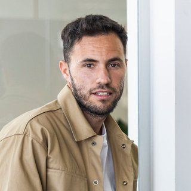
Sandro MurFounder and Chief Executive OfficerSerial entrepreneur and investor; co-founder of String Health (String AI, String Life & IVY). 15 years in technology.
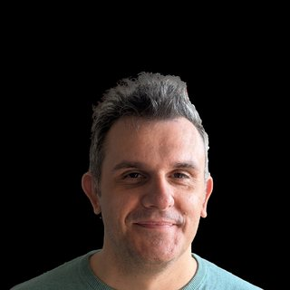
Zlatko Smole, Ph.D.Chief Scientific OfficerPh.D., ETH Zürich. 15+ years in pharma (Hospira, Pfizer, Xellia, Hikma); drug development and CMC strategy.
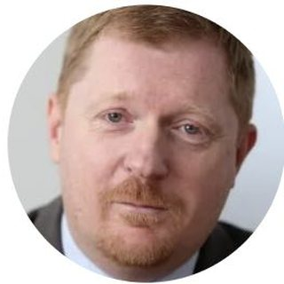
Miroslav KlepačChief Financial OfficerFormer CFO at Podravka, HT, Allianz and Croatia Osiguranje.
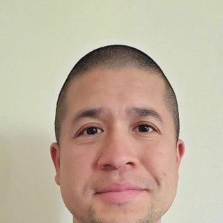
John ChavezCo-Founder, Research and DevelopmentFounder of DMT Quest, which supports tier-1 research on DMT and mammalian physiology.
Clinical and Scientific Leadership
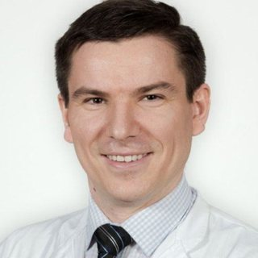
Dr. Sándor NardaiPrincipal Investigator, Stroke ProgramHead of Neurointervention at Semmelweis University; author of the 2020 and 2025 DMT stroke studies.
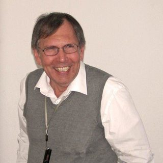
Prof. Ede Frecska, M.D., Ph.D.Hypoxia and Cellular Stress BiologyMore than 190 publications. Guides ischemia mechanisms and translational models.
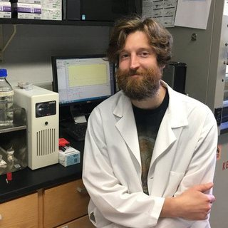
Jon Dean, Ph.D.Scientific AdvisorUCSD. Expert in cellular stress biology and molecular signaling.
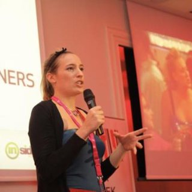
Ivana Nižetić, Ph.D.Mathematics and AI
Board of Directors
- Sandro MurFounder and Chief Executive Officer
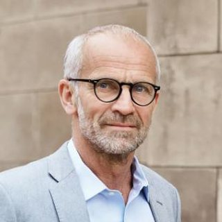
Jeppe ChristiansenDirectorFounder and CEO of Maj Invest; board member at Novo Holdings.
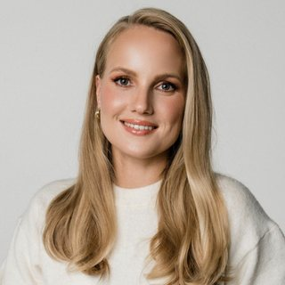
Urška SršenDirectorCo-founder of String Health; 10+ years in health and wellness technology.
Advisors
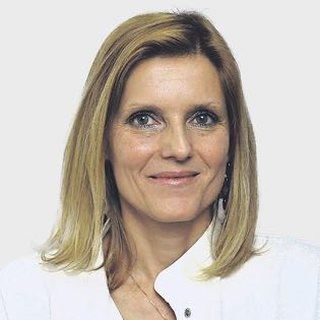
Assoc. Prof. Tanja Premru-Sršen, M.D., Ph.D.Maternal-Fetal MedicineFormer Head of Perinatology at UMC Ljubljana.
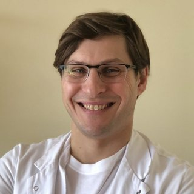
Andraž Cerar, M.D., Ph.D.Cardiology and Vascular MedicineAdvises on cardiovascular indications, endpoints and clinical design.